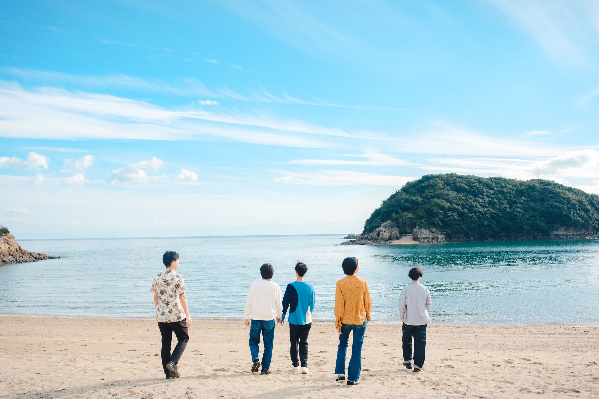
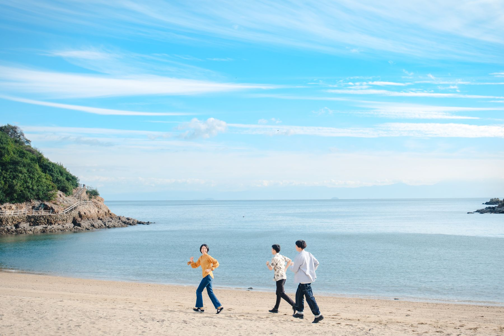

仕事は頑張ってきた。
でも、このままの延長でいいんだっけ。
誰にも言えていなかった違和感を、
同じ30代と話しながら、
自分のことばにする90分です。
参加無料／Zoom開催／先着10名
公式LINEで申し込むPC・顔出し・音声出しでご参加ください。

30代のいま、何かに違和感があったり、逆に何かに期待していたり。揺れているものを、そのまま持ってきてください。
はっきりした悩みがなくても参加できます。
当日のワークシートから
「これがあったから
続けられた」と感じた
場面はありますか？
思い浮かぶ場面を、ひとつ。
仕事でも、仕事以外でも。
当日は14の問いを手がかりに、
自分の経験を書き出していきます。
参加したきっかけと自己紹介を、ひとことずつ。旅先で肩書きを名乗らないように、ここでも肩書きの紹介はなしにしています。
30代のいまの違和感や、これまで続けてこられた理由、夢中になれたことを書き出します。
3〜4人で、書いたことをそのまま話します。うまくまとめなくて大丈夫です。
書いた違和感を「なぜ私は〜なのか？」のような問いの形にします。POOLOでは、こうして立てた問いを「探究テーマ」と呼んでいます。
問いをもう一度話したあと、「わたしは、＿＿を問います。」と一文で書いて終わります。
最後に「わたしは、＿＿を問います。」と一文で書きます。今週その問いを誰に話してみるかも決めて、90分を終えます。

この場には、3つの約束があります。
・上手な言葉にしなくてもいい
・斜に構えない、かっこつけない
・沈黙を焦らない
参加者が寄せた、体験会に申し込んだときの気持ちです。
「10年以上今の会社に勤めていますが、同期が次々と転職していき、自分はこのままでいいのか？ともやもやしていました。もやもやを脱して、自分らしいキャリアを描くきっかけが得られたら嬉しいです。」
メーカー・企画職／30代・体験会参加者
「これ誰にも言えてなかったんですけど、仕事というものに熱中できなくなってきてしまっている気がしてて、一通り経験して面倒になった？飽きた？昔の方がパフォーマンスもよかった気がする・・年のせい・・？」
メーカー・企画開発職／30代・体験会参加者
「周りはライフステージがどんどん進んでるけど、自分は変わってなくて焦る。SNS見てるとモヤモヤする。本当にライフステージ変えたいのかわからない。今の状態でも幸せだけど、周りからの見え方が気になる。」
在宅ワーク・事務職／30代・体験会参加者
ご本人が特定されない形で掲載しています。

POOLO（ポーロ）は、旅を入り口に、自分の生き方・働き方を問い直す大人の学び場です。2019年に開校し、これまでに1,200名以上が参加しています。
POOLOでは、「旅」で日常の外に出て視点を揺さぶり、「問い」で自分の言葉に置き換え、仲間に差し出して「共創」します。旅先で出会った、うまく言えない違和感が、問いの入り口になります。8ヶ月のオンラインプログラム「POOLO LIFE」は、この行き来をくり返す場です。
この90分は、そのうち「問い」のところを体験する時間です。
運営：株式会社TABIPPO／株式会社CODOLI
Peatix Community Award 2025 受賞

運営：株式会社TABIPPO／株式会社CODOLI
Peatix Community Award 2025 受賞
PCからご参加ください。スマートフォンからの参加はご遠慮ください。
全員に、書く時間と話す時間があります。
気になった方は、POOLO公式LINEからお申し込みください。
9/29（火）20:00–21:30
Zoom開催・参加無料・先着10名
公式LINEで申し込む1. POOLO公式LINEを友だち追加
2. LINE内の案内から体験会に申し込む